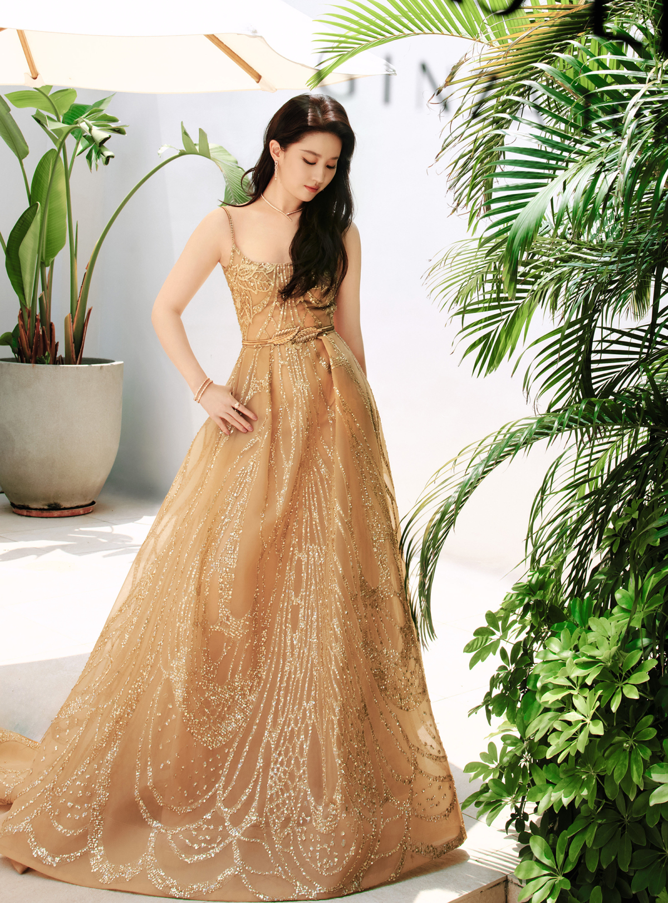

Chủ đề "Dung mạo Lưu Diệc Phi tuổi 37" thu hút hàng trăm triệu lượt xem trên Weibo, Douyin. Các bức ảnh chụp cận gương mặt diễn viên cũng nhận hàng chục nghìn bình luận. Nhiều người nhận xét Diệc Phi ngoài đời đẹp hơn trong các bức hình chụp ở studio.
Theo Sohu, nhiều người đến trước giờ sự kiện diễn ra cả tiếng, giành vị trí đẹp để ngắm Lưu Diệc Phi.
Cùng ngày, cô diện đầm Haute Couture của Elie Saab dự tiệc
Trang Sina Lưu Diệc Phi duy trì sức hút, độ nổi tiếng sau hơn 20 năm vào làng giải trí. Những năm gần đây, cô gây tiếng vang với các phim truyền hình Mộng hoa lục, Đến nơi có gió. Diệc Phi sắp ra mắt Câu chuyện hoa hồng, đóng cùng Hoắc Kiến Hoa.
Cô là đại sứ của nhiều thương hiệu hàng xa xỉ, đồ điện tử, mỹ phẩm.